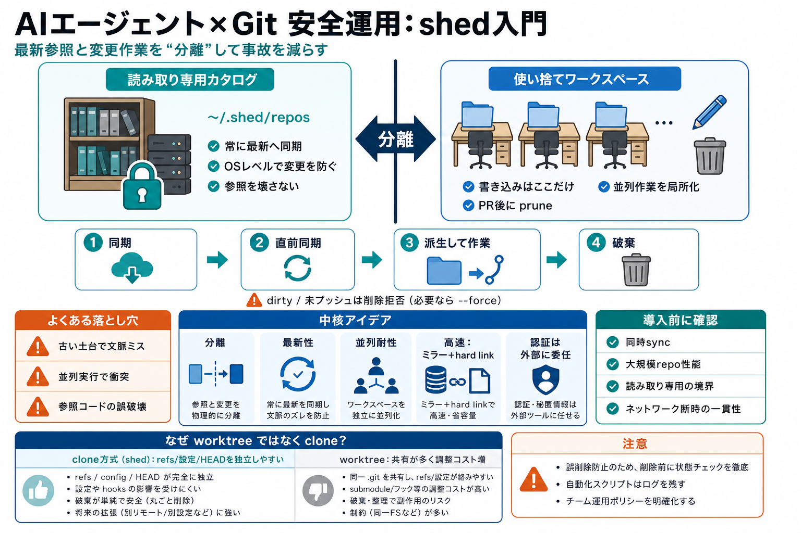

COVER
02 / 16
AIエージェント×Git安全運用
shed
入門
ターミナルでコードを書くAIエージェントがGitリポジトリを安全に扱えるようにする仕組みです。
読み取り専用のカタログ
と
使い捨てワークスペース
を分離します（日本語：スキップでなく“分離”が肝）。
想定：Claude Code / Cursor CLI / opencode などの“リポジトリを触る作業”を繰り返す運用。
PROBLEM
03 / 16
事故は“いつもの落とし穴”
古い土台・衝突・破壊
エージェントは通常クローンして作業しますが、古いコードで進めたり、他セッションと同じ作業ディレクトリを壊したりします。結果として参照用コードが壊れる・並列で競合するリスクが出ます。
リスク
最新性の欠如で文脈ミス（古いブランチ/状態）
リスク
並列実行で衝突（同じ作業場所・refs共有など）
リスク
参照用コードの誤破壊（“壊したくない”を壊しがち）
目標
安全に“最新”へ寄せつつ、変更は局所化する
METAPHOR
04 / 16
カタログと作業場
最新の棚 × 使い捨て
shedは、常に最新の“読み取り専用カタログ（カタログ）”を用意します。エージェントはそこから必要な瞬間にだけ、書き込み可能な“作業用ワークスペース（作業場）”を作って捨てます（日本語：分離）。
参照（読み取り専用）
~/.shed/repos
OSレベルで読み取り不可にする設計（事故を構造で防ぐ）
作業（書き込み可）
通常クローンとして分離し、PR後に prune で破棄
dirty/未プッシュは削除を拒否（必要なら --force）
ARCHITECTURE
05 / 16
同期→派生→作業→破棄
基本フロー
セッション開始時に同期し、workspace作成直前にも同期します。作業は参照コピーから派生し、使い終われば prune で整理します。
i
同期
セッション開始時にカタログを最新化
ii
直前同期
workspace生成直前にも同期（古い土台を減らす）
iii
派生
参照（読み取り専用）から作業（書き込み可）を作成
iv
破棄
PRマージ後などに shed prune が削除
ENUMERATION
06 / 16
shedの“中核アイデア”
分離がすべて
shedの中核は、次の5点に凝縮されます。これにより“最新性”“衝突回避”“参照破壊防止”を同時に狙います。
i
分離
読み取り専用カタログ vs 書き込み可能ワークスペース
ii
最新性
セッション開始時＋workspace直前で同期
iii
並列耐性
workspaceを“クローン”として分離（refs等を閉じる）
iv
高速
ミラー共有＋ハードリンクでオブジェクトを使い回し
v
破棄
dirty/未プッシュは削除拒否、必要なら --force
（補足）
Goバイナリ1つ・デーモン/テレメトリ無しが強調される
COMPARISON
07 / 16
worktreeではなくクローン
なぜ分離する？
README相当の内容では、git worktreeではなくクローン方式を採る理由が説明されています。並列エージェント運用での競合コストを下げる狙いです。
クローン方式（shed）
workspaceごとにrefs/設定/HEAD等が独立しやすい
同時作業でも影響範囲が局所化される方向
worktree（一般）
同一リポジトリのrefs名前空間などを共有しがち
ブランチや削除に制約が出て調整コストが増える
EVIDENCE
08 / 16
安全側の“根拠”
読み取り専用の担保
参照用リポジトリは読み取り専用として扱われ、OSレベルで読み取り不可にする設計方針が述べられています。これが“参照の誤破壊”を抑える土台になります（日本語：誤操作の物理的制約）。
カタログ（catalog）
読み取り専用＝変更不可
事故の発生確率を下げる
ワークスペース（workspace）
書き込み可能＝作業はここだけ
並列衝突時も影響を限定しやすい
PROCESS
09 / 16
“使い捨て”運用の要点
pruneと拒否条件
PRがマージされた後などに使わなくなったworkspaceは shed prune で削除されます。一方でdirty状態や未プッシュ状態の削除は拒否します。
削除される
不要になったworkspace（PRマージ後など）
削除を拒否
dirty（未コミット変更）状態
削除を拒否
未プッシュ（push前）状態
必要なら --force で上書き可能な旨が述べられています。
SECURITY
10 / 16
認証はshedが持たない
責務分離
shedはcredentials（認証情報）を管理しません。HTTPSのcredential helperやSSH agentなど、ユーザーの既存Git設定に委ねる設計です（日本語：認証は外部）。
shedがやること
同期・カタログ保持・workspace生成/破棄
ユーザー側がやること
git cloneが通る認証の準備（HTTPS/SSH）
URL変換（HTTPS→SSH）や事前チェックは環境依存の可能性
INTEGRATION
11 / 16
エージェントへ“ガイド注入”
SessionStart hook
Claude Code / Cursor CLIではSessionStart hookで指示や利用方法をモデルの文脈へ注入し、背景同期コマンドを実行します。opencodeはプラグイン配置で同様のことを行う、と記載されています。
Claude Code / Cursor CLI
SessionStart hookでガイド＋同期
（日本語：開始時に“言語化”＋“更新”）
opencode
プラグインを置いて同様の制御
運用は環境ごとに確認
PERFORMANCE
12 / 16
速い生成・速い破棄
ミラー＋ハードリンク
ミラー（fetch専用の共有ミラー）を使い、objectsをハードリンクすることでworkspace生成を高速化します。さらに、ローカル生成はオフラインでも成立するよう設計が狙われています。
高速化
共有ミラー＋hard linkでオブジェクトを使い回し
オフライン（狙い）
workspace生成をネットワーク断でも成立させる
LIMITS
13 / 16
READMEだけでは未解決
導入前に確認したい点
提示情報だけでは、ロック戦略や大規模リポジトリの実測性能、セキュリティ保証の境界、ネットワーク断・部分同期時の一貫性などが不十分です。試験環境でログとエラーケースを確認するのが安全です。
運用
同時sync/workspace生成の競合と失敗時の後始末
性能
gc負荷・ディスク使用量・ミラー/ハードリンクの実測
セキュリティ
“読み取り専用”の担保範囲と攻撃面の全体像
一貫性
最新性が担保できない状況でのエージェント挙動
CLOSING
14 / 16
結論：事故耐性を設計で作る
分離
が強い
shedは“最新参照”と“変更作業”を分離し、並列エージェント運用の衝突と参照破壊を抑える設計です。導入時は同期失敗・並列負荷・セキュリティ境界を試験で固めるのが現実的です。
REFERENCES
15 / 16
参照（この整理の元）
README相当まとめ
以下はユーザー提示文（README相当の内容）から抽出・圧縮した要点です。元のREADMEやリポジトリ仕様で最新情報を確認してください。
含まれている論点
参照用読み取り専用（~/.shed/repos）、セッション開始時＋workspace直前の同期、 workspace削除（shed prune / dirty/未プッシュは拒否、--force）、 クローン方式の理由（worktree回避・refs等の独立性）、 ミラー共有とhard linkによる高速化、 credentialsをshedが持たない（HTTPS helper/SSH agentに委ねる）、 One Go binary・no daemon・no telemetry、 SessionStart hook/プラグイン統合（Claude Code / Cursor CLI / opencode）
REFERENCES
16 / 16
References
No references found